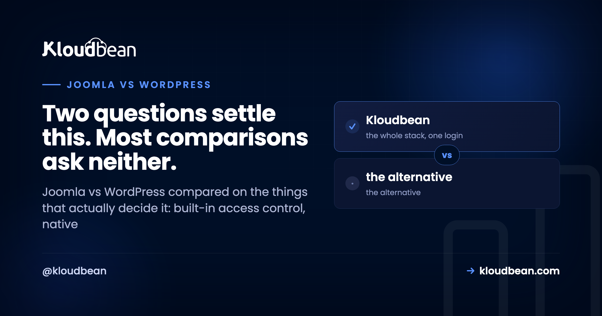

Joomla vs WordPress: Pick by Permissions and Languages, Not Popularity

Most Joomla versus WordPress comparisons open with market share and end with "WordPress is more popular, Joomla is more powerful", which is not a decision framework. Both are mature PHP applications backed by MySQL or MariaDB, both have been shipping for around two decades, and both will run a serious website. The choice actually turns on two specific capabilities Joomla includes and WordPress does not, weighed against an ecosystem and hiring advantage that is genuinely enormous. Answer those and the decision usually makes itself.
Choose Joomla if you need granular per-user access control or true multilingual content as a core requirement, because both are built in rather than added by extension. Choose WordPress for almost everything else: content and marketing sites, e-commerce through WooCommerce, anywhere you need a large plugin ecosystem, and anywhere you will need to hire or hand the site over. WordPress runs north of 40% of all websites by most measurements, Joomla low single digits, and that gap decides more practical questions than any feature list.
The two things Joomla genuinely does better
These are not tie-breakers, they are the reasons Joomla still wins projects, and they deserve stating plainly before anything else.
Access control is built in and it is granular. Joomla ships with a real ACL system: user groups, access levels, and per-action permissions you configure in the admin without installing anything. If your requirement is that this department can edit these sections while that team can only submit for review and a third group can view unpublished items, Joomla does that natively.
WordPress has five roles out of the box and they are broad. Real granularity means a membership or role-management plugin, which works, and now the security model of your site depends on a plugin staying maintained. For an internal portal, an intranet, or anything with a genuine editorial hierarchy, that difference matters.
Multilingual content is native. Joomla handles multiple languages in core: language associations between items, per-language menus, and content in several languages without an extension. WordPress needs a plugin for this, and multilingual plugins are among the heaviest and most invasive you can install, because translation touches every content type, taxonomy, menu, and URL.
If you are launching in one language and might add a second someday, either is fine. If you are launching in four languages on day one and translation is central to how the site works, Joomla's native handling is a real advantage rather than a talking point.
The one thing WordPress does better, and it is very large
Ecosystem and people. Those are two things, and in practice they are the same thing.
The plugin and theme library, the number of services that ship a WordPress integration first, the volume of documentation and tutorials, the number of developers who know it, the number of agencies who support it, and the ease of handing a site to whoever comes after you. Every one of those favours WordPress by a wide margin, and they compound.
This is not a soft consideration. It shows up as concrete project risk. Need a specific payment gateway, CRM sync, booking system, or marketing tool? On WordPress there is very likely a maintained integration. On Joomla there may be an extension, an older extension, or custom work. Need to replace your developer in eighteen months? The WordPress talent pool is not comparable.
And for e-commerce specifically, WooCommerce is a decisive advantage. It is deeply established, the extension market around it is huge, and almost everyone in the space builds for it. Joomla has capable commerce extensions, and the surrounding ecosystem is not close.
Side by side, on things that matter
| WordPress | Joomla | |
|---|---|---|
| Access control | Five broad roles, granularity via plugin | Granular ACL in core |
| Multilingual | Plugin, and a heavy one | Built into core |
| Ecosystem size | Very large | Modest |
| E-commerce | WooCommerce plus a huge extension market | Capable, much smaller ecosystem |
| Hiring and handover | Easy, large talent pool | Harder, specialised |
| Learning curve for editors | Gentler | Steeper, more concepts up front |
| Structure for developers | Flexible, conventions vary | More prescriptive MVC |
| Security surface | Large, driven by plugin count | Smaller, fewer moving parts |
| Stack | PHP, MySQL or MariaDB | PHP, MySQL or MariaDB |
The security question, answered honestly
WordPress gets described as insecure and that is mostly the wrong framing. WordPress core is actively maintained and patched quickly. The security problem is plugins: a site with thirty plugins from twenty authors has thirty update responsibilities and twenty maintenance risks, and abandoned plugins are the common route in.
Joomla's smaller surface is a real consequence of a smaller ecosystem rather than better engineering. Fewer extensions means fewer things to go wrong, and it also means you write more yourself, which is its own risk if the person writing it is in a hurry.
So the honest version: neither platform is meaningfully more secure than the other when maintained properly. What differs is the shape of the work. On WordPress your discipline goes into auditing and updating plugins, and into resisting the urge to solve every requirement by installing something. On Joomla it goes into maintaining more custom code with fewer people who understand it.
Either way, the operational baseline is the same: a firewall, intrusion prevention, current PHP, current core, tested backups, and a staging copy so updates are not applied blind. That work does not care which CMS you chose. Our secure WordPress hosting guide covers the WordPress specifics, and most of it generalises.
What running either actually costs you
The comparison people skip. Both are self-hosted PHP applications, which means somebody owns the server, and the operational work is nearly identical: PHP version management, a database, TLS certificates and renewal, a firewall, backups, caching, and updates that occasionally break something.
Where the platforms diverge operationally is update frequency and blast radius. WordPress sites tend to have more moving parts and more frequent updates, so more opportunities for a plugin update to take the site down, which is what our critical error guide is largely about. Joomla sites update less often and change more when they do, because a major version step is a bigger event.
Both benefit enormously from the same two practices: apply changes on a copy first, and keep backups you have actually restored from. Neither is a CMS feature. Both are a hosting decision.
A decision path
Work down this list and stop at the first line that describes you.
- Complex per-user or per-section permissions are a core requirement. Joomla, for the native ACL.
- Launching in several languages, translation is central. Joomla, for native multilingual.
- Your team already knows Joomla and you have working Joomla sites. Joomla. Existing expertise beats a marginal feature comparison.
- You are selling products online. WordPress with WooCommerce. The ecosystem gap is decisive here.
- Content, marketing, publishing, or lead generation. WordPress.
- You will hand this over, or hire for it, or need agency support. WordPress.
- You need a specific third-party integration. Check which platform has a maintained one, then choose that. This overrides everything above.
- Still undecided. WordPress. When the requirements do not clearly favour Joomla, the ecosystem and hiring advantage is the tie-breaker, and it is not close.
That last line is the honest default, and I would rather say it than pretend the choice is finely balanced. Joomla is a genuinely good CMS with two standout capabilities. If neither of them is on your requirements list, the practical case for it is thin.
What about migrating between them?
Treat it as a rebuild, not a conversion. Content can be moved with effort, and the surrounding structure cannot: templates, extensions, URL patterns, taxonomies, and user permissions all differ fundamentally. Anyone offering a one-click migration between these two is describing content export, which is the easy part.
The practical approach is to build the new site properly, move content in, map every old URL to its new location with redirects, and cut over. Skipping the redirect mapping is how organisations lose search rankings during a replatform, and it is entirely avoidable. Plan that spreadsheet before you plan the design.
Running either one on Kloudbean
Both are one-click installs, and that is a deliberate point rather than a footnote: WordPress, WooCommerce, Joomla, Drupal, Magento, and Laravel all install from the same dashboard onto the same managed stack. So the choice above can be made on merit rather than on what your host happens to support.
What you get either way: managed servers across seven clouds with your choice of region, managed MySQL or MariaDB, free SSL issued and renewed, Shorewall and Fail2ban configured, automatic backups, and servers, applications, and databases in one place.
One honest asymmetry worth knowing before you choose. Staging sites on Kloudbean cover WordPress and Laravel, so if you pick WordPress you get one-click staging for exactly the update-breaks-the-site problem described above. On Joomla you would handle that yourself. Given how much of the operational risk in both platforms comes from applying updates directly to production, that is a real factor rather than a marketing line.

Related reading
On the WordPress side, managed WordPress hosting, secure WordPress hosting, staging environments, and speeding up WordPress. For commerce, WooCommerce hosting. On the database underneath both, MariaDB vs MySQL. For the failure mode that dominates both platforms, the critical error guide. And on backups you can actually restore, the backups guide.
Choose the CMS, not the platform that limits you to one.
WordPress, WooCommerce, Joomla, Drupal, Magento, and Laravel as one-click installs on managed servers across seven clouds, with managed MySQL and MariaDB, free SSL, and automatic backups from $8/mo. Free migration assistance included. Start at kloudbean.com.
One-click WordPress and Joomla · 7 clouds · Managed databases · Free SSL · Flat from $8/mo
FAQ
Is Joomla better than WordPress?
For two specific requirements, yes: granular per-user access control and true multilingual content, both of which Joomla includes in core while WordPress needs plugins. For most other projects WordPress wins on ecosystem size, integration availability, and how easily you can hire or hand the site over. Decide on those requirements rather than on general capability.
Which is easier to learn, Joomla or WordPress?
WordPress, clearly, both for editors and for developers new to it. Joomla introduces more concepts up front, such as access levels and content organisation, which is the cost of the flexibility it gives you. If non-technical people will publish content daily, that difference shows up in training time and in support requests.
Is WordPress less secure than Joomla?
Not inherently. WordPress core is actively maintained and patched quickly, and most incidents trace to outdated or abandoned plugins rather than to core. Joomla's smaller attack surface is a consequence of a smaller ecosystem rather than better engineering. Maintained properly, neither is meaningfully safer, though the maintenance work has a different shape.
Can Joomla do e-commerce as well as WooCommerce?
Joomla has capable commerce extensions, and the surrounding ecosystem is much smaller. That matters more than the core feature comparison, because commerce depends on payment gateways, shipping integrations, tax handling, and marketing tools built by third parties. For selling online, WooCommerce is the more practical choice.
Does Joomla or WordPress perform better?
Both are PHP applications on MySQL or MariaDB, and performance is determined far more by hosting, caching, database indexing, and how much you have installed than by the platform. A lean Joomla site and a lean WordPress site perform comparably. A WordPress site with thirty plugins will be slower than either, which is a configuration outcome rather than a platform one.
How hard is it to migrate from Joomla to WordPress?
Treat it as a rebuild. Content can be exported and imported with effort, but templates, extensions, URL structures, taxonomies, and user permissions do not translate. Build the new site, map every old URL to its new location with redirects, then cut over. The redirect mapping is what protects your search rankings and it is the step most often skipped.
Which CMS is better for a multilingual website?
Joomla, if multilingual is a core requirement from day one. It handles language associations, per-language menus, and multilingual content natively, whereas WordPress requires a plugin and multilingual plugins are among the most invasive available because translation touches every content type, taxonomy, menu, and URL.
Can I run both Joomla and WordPress on the same hosting?
Yes. Both are PHP applications using MySQL or MariaDB, so the same managed stack serves either, and on Kloudbean both are one-click installs from the same dashboard alongside Drupal, Magento, and Laravel. That is worth knowing before you choose, since it means the decision can be made on requirements rather than on platform support.